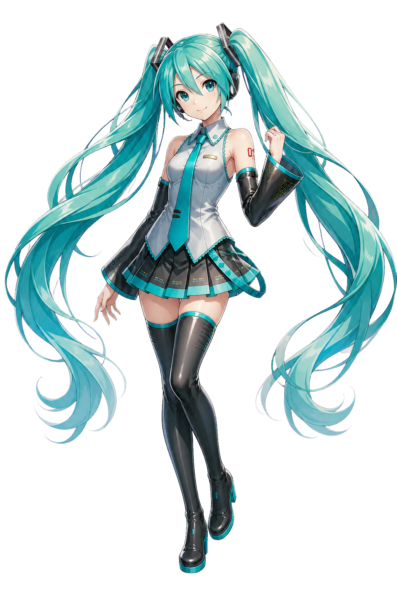

为什么想做个人网站？
社交平台适合分享当下，但不太适合保存完整的自己。这里希望成为一个可以持续很多年的空间：内容能够按年份沉淀，也允许兴趣随时改变。
现在确定了什么？
图文需要并重；网站应该有动感，但阅读时不能疲惫；二次元角色可以成为引导者，但不能遮住真正属于你的生活。
什么还会改变？
网站名称、个人形象、真实照片、文章内容和最终配色都会继续调整。
← 返回首页名字、身份和角色都还没有确定。这个版本先用 Miku 帮助我们找到真正喜欢的视觉方向。

社交平台适合分享当下，但不太适合保存完整的自己。这里希望成为一个可以持续很多年的空间：内容能够按年份沉淀，也允许兴趣随时改变。
图文需要并重；网站应该有动感，但阅读时不能疲惫；二次元角色可以成为引导者，但不能遮住真正属于你的生活。
网站名称、个人形象、真实照片、文章内容和最终配色都会继续调整。
← 返回首页